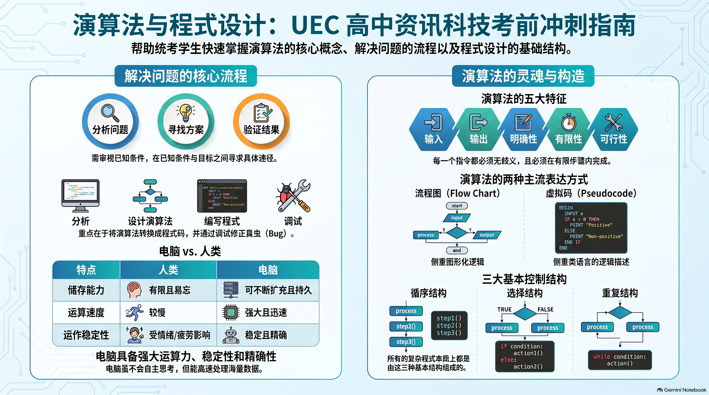

一、 单元教学与复习目标导航
1.1 课程标准核心素养
依据董教总华文独中统一课程标准，本章旨在培养学生计算思维与 Python 编程实战能力：
- 计算思维与问题分解：掌握电脑解决问题的四大标准阶段（分析问题 → 设计演算法 → 编写程式 → 测试除错）；
- 算法设计与流程建模：掌握演算法四大特性，熟练使用流程图 (Flowchart) 与虚拟码 (Pseudocode)；
- Python 语言基础与控制结构：精通变量类型、运算符（含 //、%、**），掌握循序、选择 (if-elif-else)、循环 (while, for) 三大基本控制结构；
- 经典算法策略：理解线性搜寻与二分搜寻的原理与效率，辨析暴力法 (Brute Force) 与贪进法 (Greedy Method)。
1.2 师生教学达成清单
二、 课本官方中英对照核心术语速查表
| 中文术语 | 英文术语 | 核心概念说明 |
|---|---|---|
| 演算法 / 算法 | Algorithm | 解决特定问题所采取的有限、确切、可行的步骤集合 |
| 流程图 | Flow Chart | 运用标准几何图形和流向箭头表达算法执行逻辑的图示 |
| 虚拟码 / 伪代码 | Pseudocode | 介于自然语言与程式语言之间，用结构化文句描述算法 |
| 变数 / 变量 | Variable | 电脑内存中用于暂存数据的具名存储空间，数值可改变 |
| 算术运算符 | Arithmetic Operator | +, -, *, /, //(整除), %(取余), **(幂运算) |
| 逻辑运算符 | Logical Operator | and, or, not（优先级：not > and > or） |
| 循序结构 | Sequence Structure | 程序自顶向下、逐行依序执行的最基本控制结构 |
| 选择结构 | Selection Structure | 根据条件判断，决定执行不同分支（if-elif-else） |
| 循环结构 | Iteration Structure | 在满足条件时，重复执行某段语句块（while, for） |
| 缩进 / 缩排 | Indentation | Python 中用于界定语句块层级的空格缩排（语法要求，非风格） |
| 线性搜寻 | Linear Search | 从头至尾逐一检查每个元素，O(N) 时间复杂度 |
| 二分搜寻 | Binary Search | 对已排序序列每次折半排除，O(log₂N) 时间复杂度 |
| 冒泡排序 | Bubble Sort | 相邻比较并交换，每轮将最大值冒泡到末尾，O(N²) |
| 暴力法 | Brute Force | 穷举所有可能情况逐一比对验证，可得全局最优但效率低 |
| 贪进法 / 贪心法 | Greedy Method | 每步选择当前局部最优，效率高但不一定全局最优 |
| 语法错误 | Syntax Error | 违反语法规则，程序无法运行 |
| 逻辑错误 | Logic Error | 程序能运行，但因算法缺陷导致输出错误结果 |
| 追踪表 / 干运行 | Trace Table / Dry Run | 手动逐步追踪程序执行，记录变量变化，发现逻辑错误 |
三、 课本重点分节精讲（全景幻灯配套）
3.1 电脑解决问题的四大标准阶段

- 分析问题：明确已知条件（输入）、期望目标（输出）与限制条件
- 设计演算法：规划解决步骤，用流程图或虚拟码表达
- 编写程式：将演算法用 Python 翻译成源代码
- 测试与除错：设计测试用例，排查修正各类错误
⚠️ 高频考点辨析
颠倒"分析问题"与"设计演算法"顺序，会因不清楚需求而"南辕北辙"，导致整个程式无法解决实际问题。
3.2 演算法的四大特性

| 特性 | 英文 | 核心含义 | 违反后果 |
|---|---|---|---|
| 有穷性 | Finiteness | 算法必须在有限步骤内终止 | 死循环，程序无法结束 |
| 确定性 | Definiteness | 每个步骤清晰无歧义 | 计算机无法精确执行 |
| 可行性 | Feasibility | 每个步骤都可实际执行 | 无法在现实中实现 |
| 输入与输出 | Input & Output | 可有0个输入，至少1个输出 | 无法获取结果 |
3.3 标准流程图图符

| 形状 | 名称 | 用途 |
|---|---|---|
| 椭圆 / 圆角矩形 | 起止框 | 标注"开始"或"结束" |
| 平行四边形 | 输入/输出框 | 输入数据或显示输出 |
| 矩形 | 处理框 | 计算、赋值等处理操作 |
| 菱形 | 判断框 | 条件判断，输出 True/False 两条分支 |
3.4 Python 基础语法精讲

运算符精讲（统考高频）
| 符号 | 名称 | 示例 A=17, B=5 | 结果 |
|---|---|---|---|
/ | 真除法（恒为浮点数） | 17 / 5 | 3.4 |
// | 整除（取整数商） | 17 // 5 | 3 |
% | 取模（取余数） | 17 % 5 | 2 |
** | 幂运算 | 2 ** 8 | 256 |
# 闰年判断（必考金牌公式）
y = 2024
if (y % 4 == 0 and y % 100 != 0) or y % 400 == 0:
print(y, "是闰年")
else:
print(y, "不是闰年")
💡 记忆口诀：四年一润（%4==0 且 %100≠0），百年不润，四百年必润（%400==0）。括号必须有，确保 and 先于 or 计算！
3.5 选择结构精讲

3.6 循环结构精讲

# while 循环 - 先判断后执行（必须有步进，否则死循环） i = 1 while i <= 5: print(i) i = i + 1 # 步进条件 # for 计数循环 - range(start, stop, step) for i in range(1, 11, 2): # 生成 1,3,5,7,9 print(i)
3.7 搜寻算法与排序

| 特性 | 线性搜寻 | 二分搜寻 |
|---|---|---|
| 前提条件 | 无需排序 | 必须已排序 ⚠️ |
| 策略 | 逐一检查每个元素 | 每次折半排除一半候选 |
| 效率 | O(N) | O(log₂N) |
| 22包裹示例 | 最坏 22 次 | 最坏 5 次（⌈log₂22⌉=5） |

✅ 冒泡排序要点
N 个元素最多 N-1 轮；最坏总比较 N(N-1)/2 次 O(N²)；若某轮无交换则提前结束（Flag 优化），最优 O(N)。


四、 配套全景考点图谱与思维导图
基于 NotebookLM 与官方考纲精炼的演算法与程式设计知识脉络全景图，点击图片可进入全屏高清视窗缩放研读。

📌 演算法与程式设计冲刺指南全景思维导图 · 点击放大
📝 五、 互动题库与全景智能评测系统
卷A · 卷B · 模拟卷
第 2 章演算法与程式设计完整题库：卷A（基础巩固30题）、卷B（综合进阶30题）、历届模拟卷（20题），每套按10题一组分页演练，配套5道综合情境作答题，含教师评分量规。
3
套完整题卷
80
选择题（即判即析）
15
综合作答题
10题/组
分页演练
⚡ 六、 师生考前 3 分钟极速速记卡
四阶段分析问题 → 设计演算法 → 编写程式 → 测试除错
算法特性有穷性 · 确定性 · 可行性 · 有输入与输出（可无输入但必有输出）
流程图符起止(椭圆) · 输入输出(平行四边形) · 处理(矩形) · 判断(菱形)
除法三兄弟/ 真除法(恒浮点,17/5=3.4) · // 整除(17//5=3) · % 取余(17%5=2)
闰年金牌式(y % 4 == 0 and y % 100 != 0) or y % 400 == 0（括号必须有！）
搜寻对比线性: 逐一排查，最坏N次(22包裹=22次) · 二分: 折半排除，最坏log₂N次(22包裹=5次)
循环防暴走while 必须有步进条件(i=i+1)，否则死循环；缩进控制代码块归属
策略双流派暴力法(穷举比对，全局最优) vs 贪进法(局部最优决策，不一定全局最优)
冒泡排序N个元素最多N-1轮；最坏N(N-1)/2次；无交换提前结束(O(N))优化
错误三类型语法错误(不能运行) · 运行时错误(崩溃) · 逻辑错误(能运行但结果错)